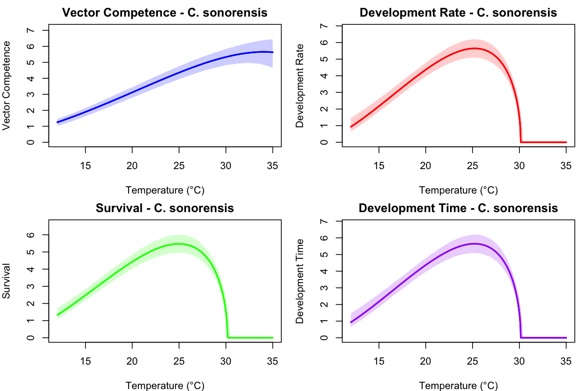
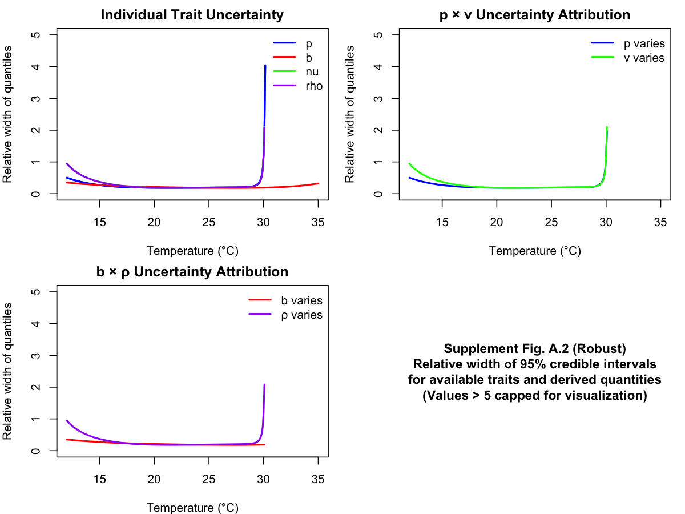

Trait Comparison - All Thermal Performance Curves

Comparison of fitted thermal performance curves for all traits in C. sonorensis
Relative Width Analysis Summary

Uncertainty analysis showing relative widths of 95% credible intervals
Supplement Fig. A.2 - Relative Width Analysis

Reproduction of Supplement Fig. A.2 from El Moustaid et al. (2021)
Individual Trait Panel - Larval Survival (p)

Complete diagnostic panel for larval survival trait including curve, data, and parameter histograms